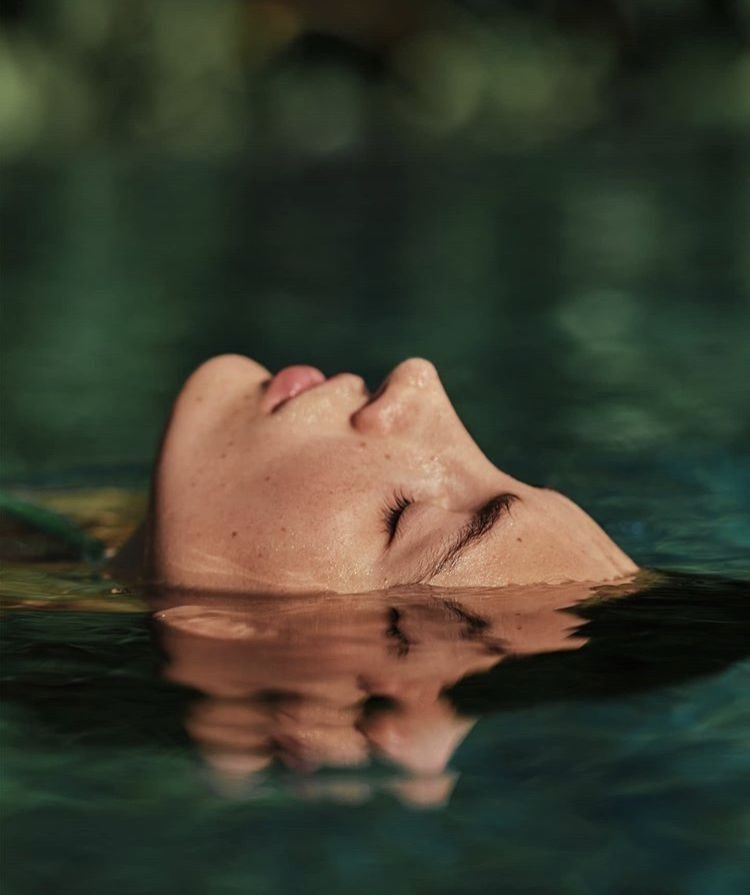

BRAND STORY
ORV의 탄생과 철학
ORV는 “쉬고 있는데도 쉬지 못하는 느낌”에서 시작했습니다. 우리가 잃어버린 감각(숨, 물, 향)을 다시 연결하는 방식으로, 매일 반복 가능한 회복을 설계합니다.

탄생 배경
어떤 날은 충분히 잠을 잤는데도 피곤하고, 쉬는 시간에도 마음이 계속 바쁘죠.
ORV 팀은 그 이유가 “휴식의 부족”보다 “감각의 단절”에 있다는 생각에 닿았습니다.
하루 종일 정보와 일정에 쫓기며 살다 보면, 숨의 길이·물의 온도·향의 결 같은 기본 감각은 뒤로 밀려납니다.
그래서 ORV는 ‘완벽한 휴식’이 아니라, 완전히 가능하고 아주 작은 회복을 만들기로 했습니다.
어떤 날에도 할 수 있는 루틴, 그 루틴이 쌓이는 구조를요.
탄생이 철학이 되기까지
ORV가 정한 출발점은 단순합니다: 향, 물, 호흡.
가장 가까운 요소들로 감각을 다시 열면, 몸이 먼저 조용해지고 마음이 따라옵니다.
그래서 ORV는 ‘강한 자극’ 대신 ‘은은한 잔향’을 지향합니다.
바스 타임이 있는 날에는 바스 솔트·버블바로, 시간이 없을 때는 샤워 스티머·룸 스프레이로,
잠들기 전에는 필로우 샤쉐·아이워머로—쉼의 결을 일상 곳곳에 놓아둡니다.
“회복은 대단한 목표가 아니라, 오늘의 감각을 다시 여는 일.”